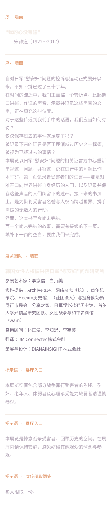
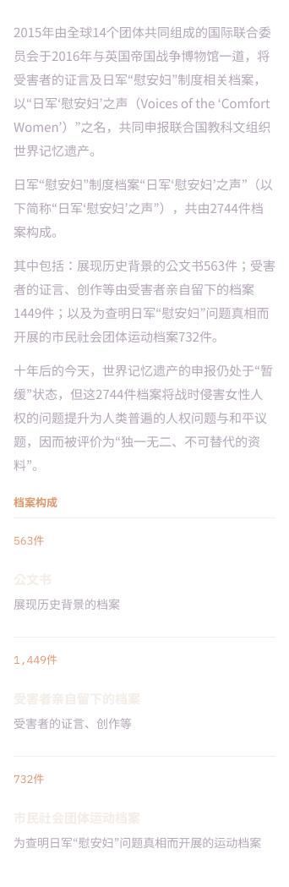
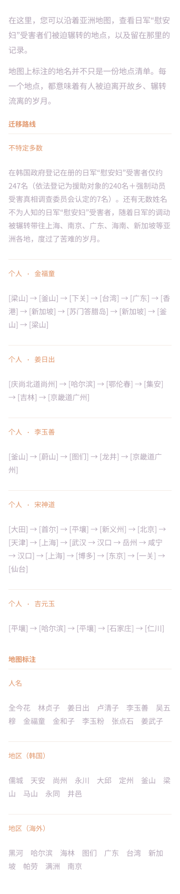
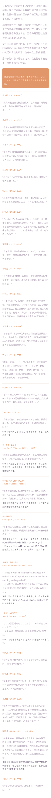
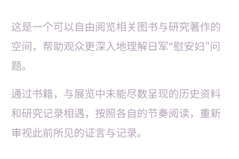

韩国女性人权振兴院 日军“慰安妇”问题研究所 主办 特别展
证言— 下一页
第2,745份记录
对于传递到我们手中的话语，我们应当如何对待？接续2,744件档案的下一页——书写第2,745份记录的旅程就此开始。
首尔 ARA艺术中心2026.10.23（五）～ 11.11（三）
大邱 Art Space LUMOS2026.11.15（日）～ 12.04（五）
观展提示
本展览空间包含部分战争罪行受害者的陈述。孕妇、老年人、体弱者及心理承受能力较弱者请谨慎观看。
“我的心没有输”
— 宋神道（1922～2017）
本展览以日军“慰安妇”问题的相关证言为中心重新审视这一问题，并将这一仍在进行中的问题比作一本“书”。然而，这本书至今尚未完结。而一个尚未完结的故事，需要有接续的下一页。填补下一页的空白，要由我们来完成。
分区导览
01 服务台入口处的序文、展览团队信息与观展提示。

02 序：年表之路1975—2026，围绕日军“慰安妇”问题的运动年表。

03 第一部分现在史：2,744件记录共同申报联合国教科文组织世界记忆遗产的2,744件档案。

04 第二部分：证言之声金福童、姜日出、李玉善、宋神道、吉元玉。与五位证言者相对。
05 记忆的路径沿着亚洲地图，查看受害者们被迫辗转的地点与记录。

06 生命呈现的证言受害者自己的作品、档案，以及后代艺术家的作品。

07 转换通道留在白布和墙面上的二十三句话。

08 第三部分：数字留下的讯息借助“数字”，以全新的视角审视日军“慰安妇”问题的历史。

09 书库之林可以自由阅览相关图书与研究著作的空间。

韩国女性人权振兴院 日军“慰安妇”问题研究所
把展厅原样搬到线上
第2,745份记录
这是可以360度参观9个展览空间的3D虚拟展馆。请在下方选择展厅，或点击“入场”按钮，沿完整参观动线游览。